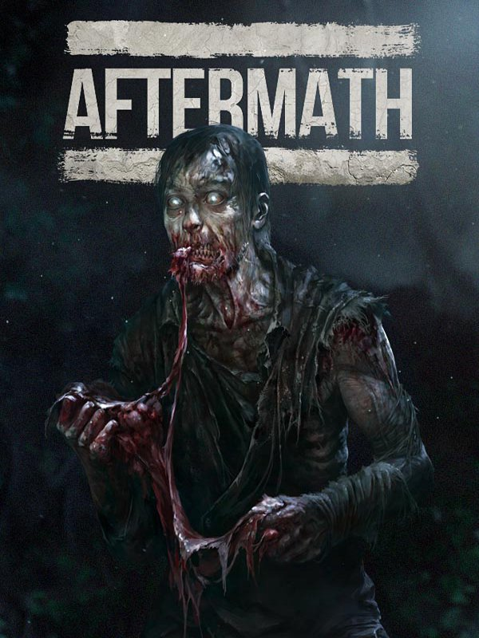

Aftermath
Aftermath
Details
|  | |
| Playtime | Not Played |
| Last Activity | Never |
| Added | 03/02/2016 |
| Modified | Never |
| Completion Status | Not Played |
| Source | Steam |
| Platform | PC |
| Release Date | 24/09/2015 |
| Community Score | 49 |
| Critic Score | |
| User Score | |
| Genre | Action Free to Play Indie Massively Multiplayer Violent |
| Developer | Free Reign Entertainment |
| Publisher | Free Reign East LLC OP Productions LLC |
| Feature | Co-op MMO Multiplayer Online Pvp Pvp |
| Links | PCGamingWiki Community Hub Discussions Guides Store Page News |
Description
AFTERMATH END OF SERVICE NOTICE
Dear Players,
We began Aftermath as a passion project 2 years ago that aimed to expand the Infestation/WarZ zombie survival universe and give players not only a harsh open world survival experience, but also let players build their own bases, claim land and store items. We ultimately chose to make the game free-to-play from the beginning in order to allow any curious player to try it without having to plunk down hard earned cash given how questionable early access titles can sometimes be. This free to play model worked for quite some time due to word of mouth, almost 2 years in fact, however, with the population dwindling we fear that we cannot keep servers online for much longer.
Not long ago we made the decision to restrict new user registrations as well as halt the sale of in game currency to avoid potential disappointment from new players as the game had not been updated in the last 4 months. Unfortunately the economics of the game are not able to afford us the luxury of continued development and support for Aftermath. With sadness we’ve made the difficult decision to close Aftermath. It wasn’t an easy decision for us, as we’ve been quite emotionally invested in Aftermath, but sometimes these kind of decisions have to made in order to move forward as a company.
We as a team would like to thank you for all of the support you have given us over the past 2 years and the fun experiences we were all able to share - be it fighting over supply drops, herding zombies for liberation events, collecting resources, crafting, building forts and more.
About the Game
Survive against the odds in a giant sandbox MMO world featuring lush forests, dry desert plains, peaceful meadows and the eerie zombies that inhabit the world.Scavenge for guns, supplies, survival items and crafting materials in various zones including cities, farms, military bases, abandoned outposts, forgotten rest stops and hundreds of small encampments left behind by survivors before you.
Build and protect your shelter, harvest crops, learn crafting blueprints and store your items on our server in your Global Inventory or hide them in a stash box in the world.
Be a civilian, a trader, a protector of peace, a ruthless bandit or combination of them all. Customize your character with hundreds of visual cosmetic items including Headwear, Facewear, Shirts, Jackets and Pants. Swap your cosmetic items at any time on the fly, unlock weapon skins and show everyone in a safezone that you know where to find the rare items.
THE FOLLOWING FEATURES ARE AVAILABLE RIGHT NOW :
Gun Skins
Unlock permanent skins for your guns via special Cosmetic Crates that can be found in the world. These skins display to other players and can be changed at any time. Skins can also be traded if you already have the skin. There are even rare permanently skinned guns rumored to be available to those who hunt far and wide.
Crafting
Fill in the gaps during your looting adventure by crafting useful things you couldn't find. Break down rubbish items in the world into their core crafting components and repurpose them into high end upgrades to your gear or fashion a new silencer for your gun. With over 40+ crafting recipes to be unlocked you'll find that almost anything you need can be crafted, provided you've found the right components. Loot or craft all the items a survivor would need in a zombie apocalypse as well as a few novelty and lethal crafting options that may be above and beyond the usual survival requirements. Craft shelter, weapons, attachments, armor, ammunition, medical supplies, food, purify water and set up traps for players or set up a nice peaceful garden to harvest.
Town Liberation
You've looted the city and killed the zombies, but what should you do next? Liberate the town of course! Now players have the option to repair generators and fill them with gasoline from a nearby gas pump. Once all the generators are repaired and enough zombies have been killed then supply drops with epic loots will begin dropping all around the town! Beware though, other survivors will likely be wanting the supply drops as well. It is up to you to decide if you share the spoils.
Supply Drops
Supply shipments containing large caches of weapons, ammo, medical supplies and rare guns have been spotted randomly on the map. Be lucky enough to find one of these alone and you'll walk away armed to the teeth with enough gear to arm your friends as well!
Radio Tower Control
Disable zombie sense of smell, sight and sound for a short period of time in key areas to move unhindered and unnoticed by the local zombies. Find a radio transmission chip and insert it into the console at a functioning radio town in a town to take advantage of this new gameplay.
Hundreds of Character Customizations variants
Customize your character at any time in game simply by opening the customization menu. Change out your hat, mask or scarf, upper body and legware to match your surroundings. Don't stick out like a sore thumb in the middle of the jungle with a desert camo outfit. Adapt your clothing to fit to your surroundings without taking up bagspace.
Place-able Barricades
Find fortification in any situation with placeable barricades. Available both through looting as well as crafting - these essential placable barricades can be the difference between life and death by blocking damage and visibility between you and another survivor attempting to shoot you. With 7 different barricades to choose from you'll have one for every situation including cleverly placed barricades to enable access to an area not normally accessible.
Base Building
Ever dreamed of owning a little piece of land overlooking your favorite location in a game? Now you can with our totally renovated base building system! Place down your statue to claim your land and build unhindered anywhere on the land that you own. Place defenses, harvestable crops, cooking racks, water wells, living quarters for your friends and your own personal storage locker! Owning a base has never been better!
Grouping
Group with your friends or even make new friends with other players in game. You can't be back stabbed while in a group so feel free to team up with anyone! Beware they might lead you to some of their not so friendly "friends" but that's all part of the adventure. Take on challenges like the new Town Liberation's or raid an enemy base in style in all matching cosmetic outfits!
Stat Tracking
We now make it easy for you to track your stats in game like time played as well as kills and deaths simply by typing /stats in game chat.
Harvestable Crops
Live off the land and prosper by hiding gardens around the land for your own personal food stash or protect them inside your base. Once food has been harvested you can choose to eat it on the spot, cook it or use it in a crafting recipe to possibly get even better results.
Variety of Guns
Want to play a game where you don't have all the best items the very first hour you play? We have variety of weapons to find right now. We have items ranging from crafted and assembled homebrew weapons as well as high grade factory weapons including rare collectors edition versions of guns and different tiers of weapons featuring different recoil, spread and damage ratios. The rarer the gun, the better the gun. Show off your guns and skins in a safezone or trade with other players!
Melee Weapons
As much as everyone always wants to be armed to the teeth with the best assault rifle, everyone has to start somewhere and sometimes the best you've got is a kitchen knife. We've got you covered from simple household weapons to crafted makeshift weapons as well as heavier duty fire axes and maces that deal brutal damage but swing slow. We're sure you'll be able to find your niche weapon for beating off zombies.
PVP Servers
Up the anty with a bit of extra excitement in your zombie apocalypse. Head into a PVP server where it's no holds barred item drop PVP and test your mettle against other survivors if you happen to cross paths. Town Liberations are enabled on PVP servers to add a bit more risk to the reward of open world "anything goes" pvp. Find unique solutions to player disputes on PVP servers not normally possible on PVE. Expect players to be ruthless.
PVE Servers
Tired of always feeling like everyone is out to get you for all your precious items and every shadow and sound is terrifying? We understand that you might feel more like going on an adventure and turning up the ambiance without the constant fear of someone stalking you. PVE offers a more casual experience for players that just want to practice surviving and looting in the world without PVP combat.
Totally new respawn system
Now featuring five new respawn options so players really have control over where they are in the world. Upon your unfortunate death you can now choose between proximity, sleeping bag, base, group or safezone now. This really helps players meet up with their friends across the map quicker by taking a quick and dirty respawn or allows you the convenience of being across the map and still returning back to your base in a pinch, provided you're okay with dying :)